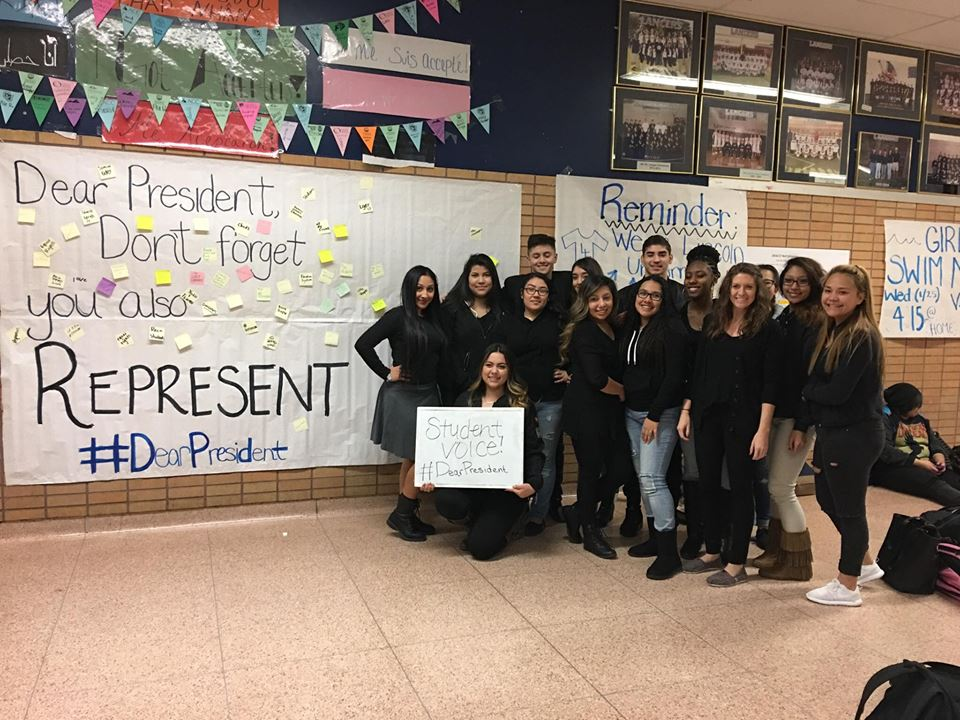

Events / Eventos
*There are no current Student Board Events coming up*
*No hay eventos de la Tabla de Estudiantes que vienen*
School Events Coming Up / Eventos Escolares Que Vienen
Cinco de Mayo Celebration / Celebracion de Cinco de Mayo
5th of May / 5 de Mayo
Past Events / Eventos Pasados
We Stand As One Rally / Permanecemos Como Uno
December 3rd, 2016 / 3 de Diciembre, 2016
Worked with organizations, speakers, and immigration lawyers after election of Trump to help community members.
Juntamos con organizaciones, oradores, y abogados de imigracion despues de la elecion de Trump para assistir miembros de la comunidad.
Blackout Day / Dia Negro
January 21st, 2017 / 21 de Enero, 2017
Students in school wore black as a symbol of unity after the inauguration of Trump. Poster saying "Dear President, Don't forget you also represent..." with trending hashtag, "#DearPresident" was up for students to write something they care about that can be affected by the newly elected president.
Estudiantes en la escuela utilizaron el color negro para demostrar unidad el dia despues de la inauguracion de Trump. Cartel que dice "Estimado Presidente, No se olvide que usted también representa ..." con hashtag de tendencia, "#DearPresident" fue para los estudiantes a escribir algo que les importa que puede ser afectado por el presidente recién elegido.

|